IDNTT Everywhere
Everywhere: tredici sedi nel mondo diventano una costellazione, e la costellazione diventa una foglia digitale, il simbolo del nuovo hub di Milano.
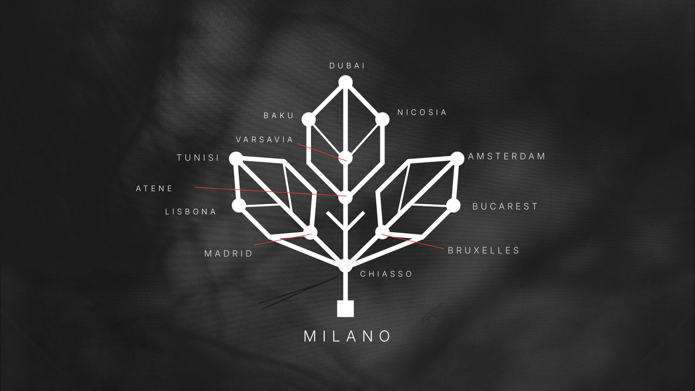
01 — Il simbolo
Ogni nodo è una sede, il quadrato alla base è Milano: la rete del gruppo prende la forma di una foglia.
L’identità in una tavola
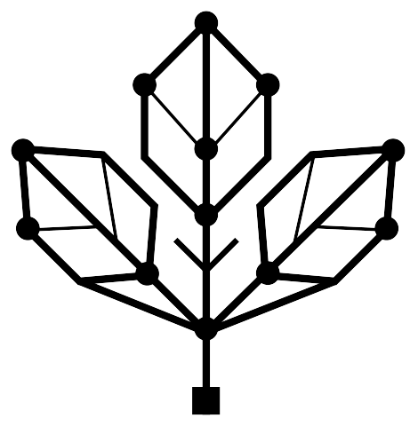
A Dalla foglia al simbolo
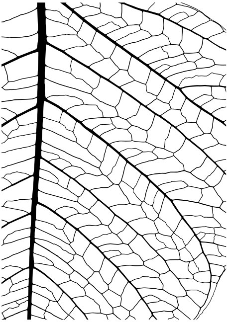
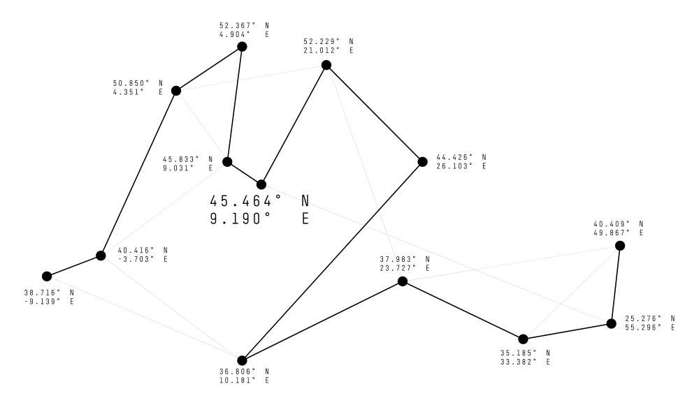
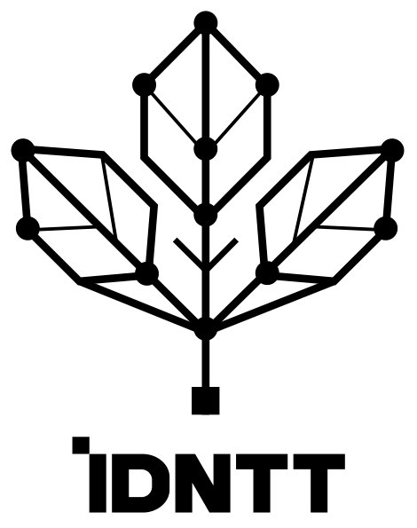
B Colore
Nero#000000
Bianco#FFFFFF
Rosso#FF372C
Grigio#A0A0A0
Antracite#1D2122
Pietra#E7E3E0
C Le tredici sedi
- Milano · hub45.464° N 9.190° E
- Chiasso45.833° N 9.031° E
- Bruxelles50.850° N 4.351° E
- Amsterdam52.367° N 4.904° E
- Varsavia52.229° N 21.012° E
- Bucarest44.426° N 26.103° E
- Madrid40.416° N 3.703° O
- Lisbona38.716° N 9.139° O
- Tunisi36.806° N 10.181° E
- Atene37.983° N 23.727° E
- Nicosia35.185° N 33.382° E
- Baku40.409° N 49.867° E
- Dubai25.276° N 55.296° E
D Dove vive il marchio
2
All’evento
- Proiezioni immersive
- Animazione del simbolo
3
In digitale
- Save the date per stories
- Save the date per post
- Save the date orizzontale
4
Con gli ospiti
- T-shirt
- Felpa
- Welcome box
- Custodia per laptop
02 — Everywhere
La parola chiave diventa materia: un lettering che si piega dentro forme tropicali, come una pianta che cresce ovunque.
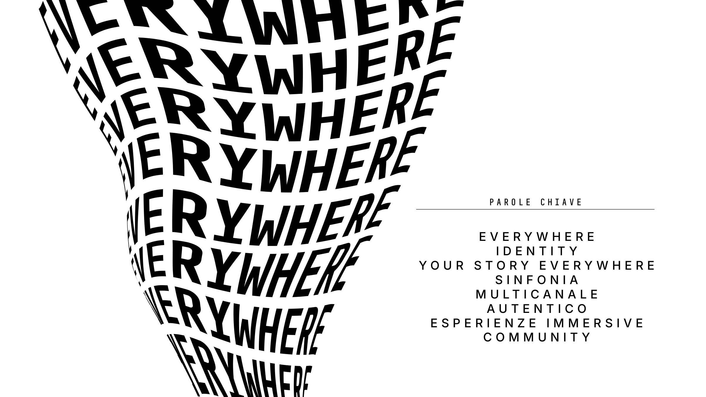
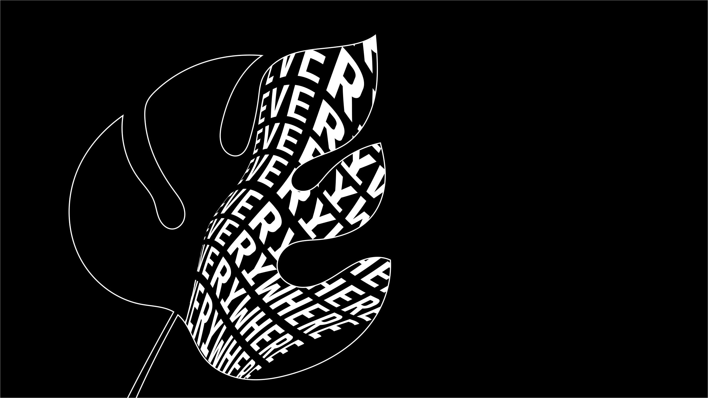
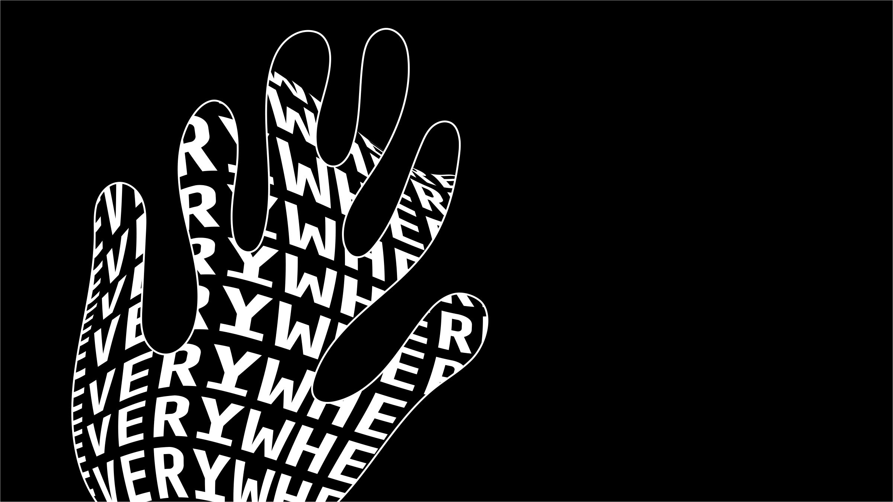
03 — Le immagini
Il simbolo si appoggia su paesaggi, materie e luci: la stessa geometria si ritrova nella natura e nelle città.
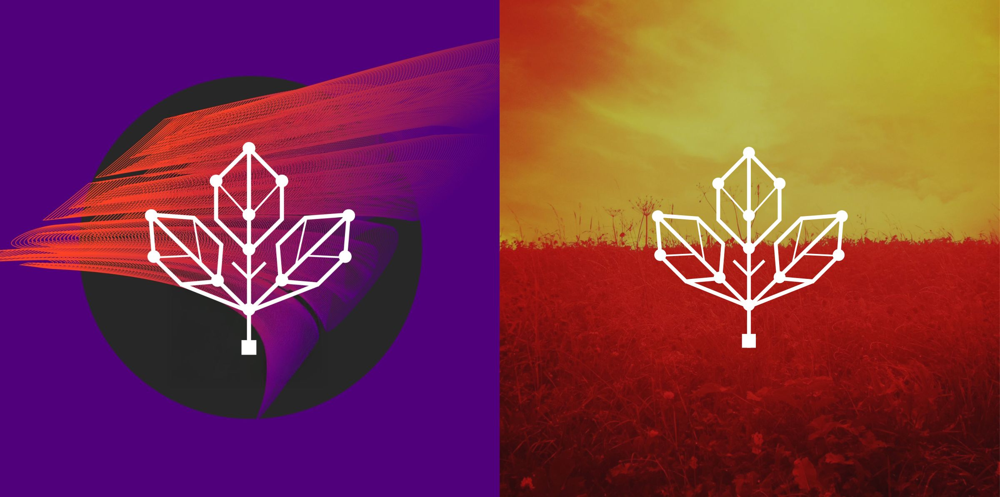
04 — L’opening
Proiezioni immersive per la serata, save the date digitali e un kit di benvenuto per gli ospiti.
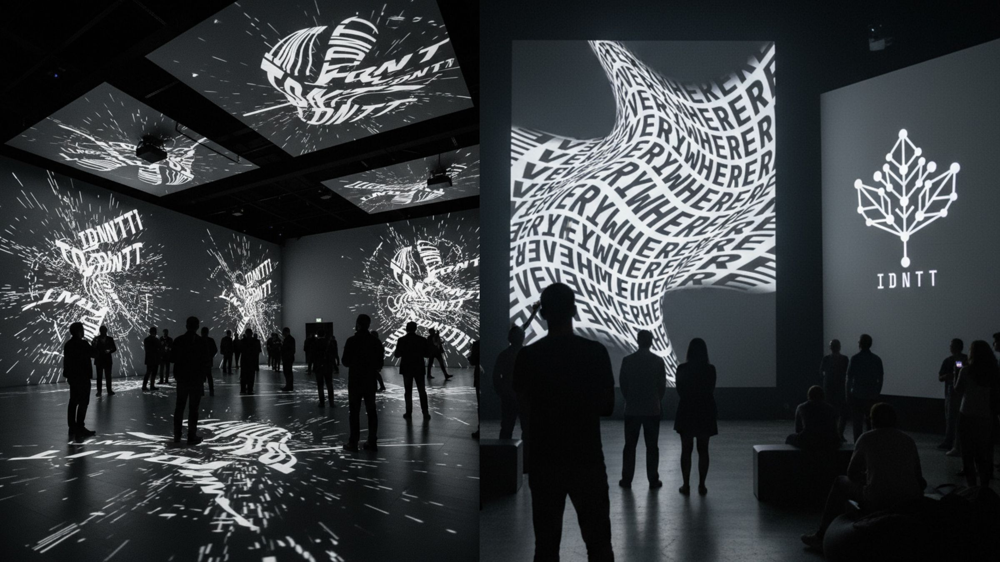
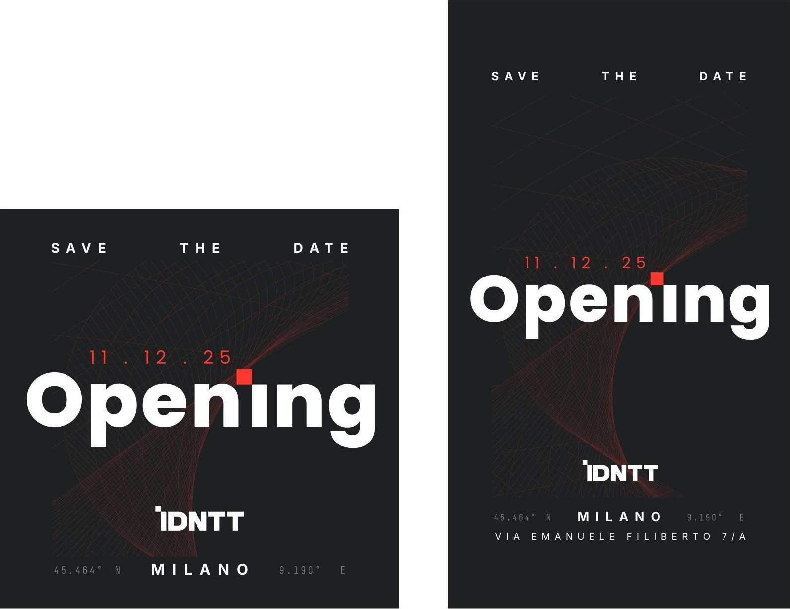
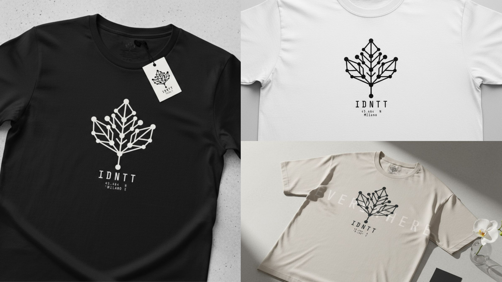
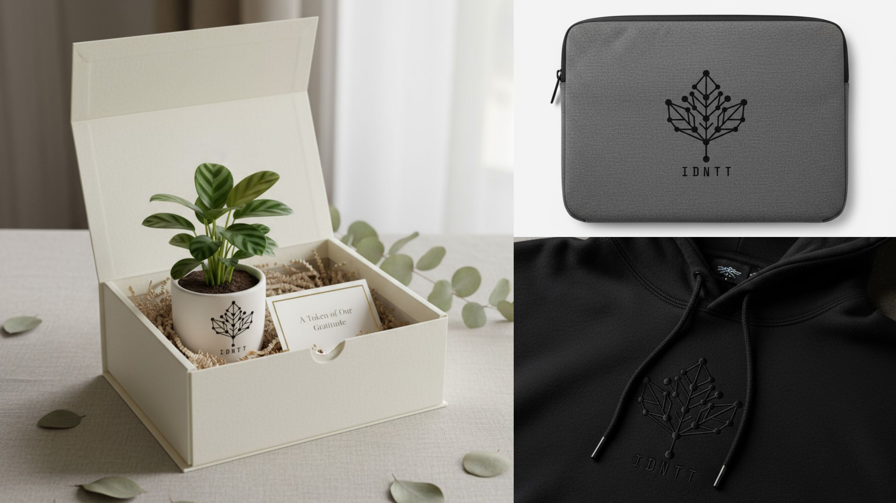